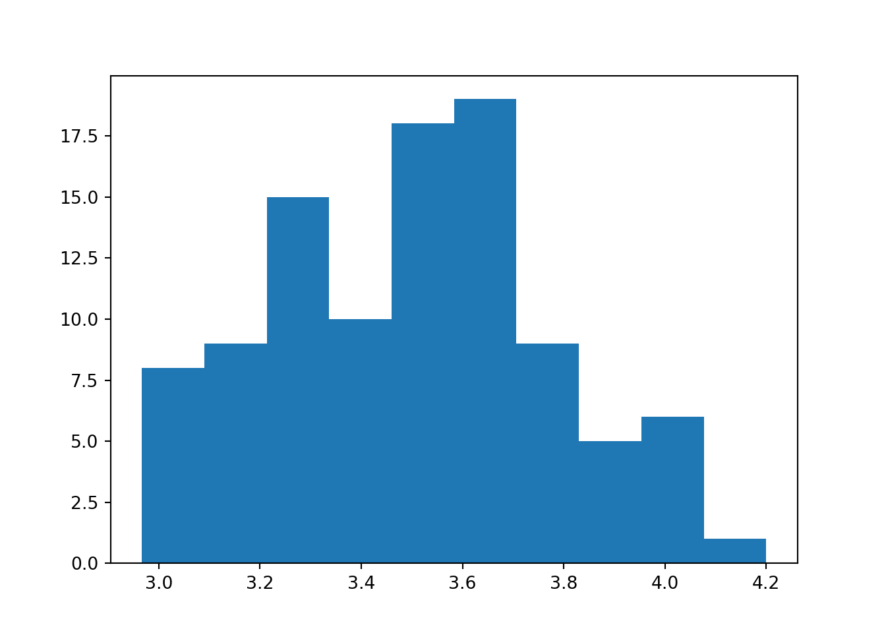

Chapter 3 Python / R analyses
3.1 Sample Questions
3.1.1 Active users on a messaging application
- Data Analysis
- Python
- Pandas
- Data Manipulation
- External Dataset
Here is a table schema for a P2P messaging application. The table contains send/receive message data for the application’s users. The structure is as follows:
Table name: user_messaging
| user_messaging |
|---|
| date |
| sender_id (#id of the message sender) |
| receiver_id (#id of the message receiver) |
Using Python, calculate what fraction of senders sent messages to at least 9 unique people on March 1, 2018.
Click here to view this problem in an interactive Colab (Jupyter) notebook.
# In Python
import pandas as pd
data = pd.read_csv('https://raw.githubusercontent.com/erood/interviewqs.com_code_snippets/master/Datasets/ddi_message_app_data.csv')
print(data.head())## date sender_id receiver_id
## 0 2018-03-01 5 2
## 1 2018-03-01 8 6
## 2 2018-03-01 1 2
## 3 2018-03-01 4 8
## 4 2018-03-01 2 7print(data.info())## <class 'pandas.core.frame.DataFrame'>
## RangeIndex: 999 entries, 0 to 998
## Data columns (total 3 columns):
## date 999 non-null object
## sender_id 999 non-null int64
## receiver_id 999 non-null int64
## dtypes: int64(2), object(1)
## memory usage: 23.5+ KB
## Nonedef fraction_sent_by_day(data:pd.DataFrame, day:str, count:int) -> int:
df_filtered = data[data['date'] == day]
df_filtered = df_filtered.drop_duplicates(subset = ['sender_id', 'receiver_id'], keep = 'first').reset_index(drop=True)
numerator = len(df_filtered)
return numerator / len(data)
fraction_sent_by_day(data, '2018-03-01', 9)## 0.0890890890890891# In R
library(tidyverse)
df_raw = read.csv('https://raw.githubusercontent.com/erood/interviewqs.com_code_snippets/master/Datasets/ddi_message_app_data.csv')
df <- df_raw %>%
filter(date == '2018-03-01') %>%
group_by(sender_id) %>%
summarise(unique_sends = n_distinct(receiver_id)) %>%
summarise(answer = sum(unique_sends >= 9) / n())
df[1]## # A tibble: 1 × 1
## answer
## <dbl>
## 1 0.93.1.2 Time for a response on a messaging application
- Data Analysis
- Python
- Pandas
- Data Manipulation
You are given a dataset with information around messages sent between users in a P2P messaging application. Below is the dataset’s schema:
| Column Name | Data Type | Description |
|---|---|---|
| date | string | date of the message sent/received, format is ‘YYYY-mm-dd’ |
| timestamp | integer | timestamp of the message sent/received, epoch seconds |
| sender_id | integer | id of the message sender |
| receiver_id | integer | id of the message receiver |
Given this, write code to find the fraction of messages that are sent between the same sender and receiver within five minutes (e.g. the fraction of messages that receive a response within 5 minutes).
# group by sender and receiver
import pandas as pd
df = pd.read_csv('data/data_analysis_2-messages.csv')
df.head()## date timestamp sender_id receiver_id
## 0 2018-03-01 1519923378 1 5
## 1 2018-03-01 1519942810 1 4
## 2 2018-03-01 1519918950 1 5
## 3 2018-03-01 1519930114 1 2
## 4 2018-03-01 1519920410 1 23.1.3 Cleaning and analyzing employee data
- Data Analysis
- Pandas
- Data Manipulation
- Data Cleaning
Below is a snippet from a table that contains information about employees that work at Company XYZ:
| employee_name | employee_id | date_joined | age | yrs_of_experience |
|---|---|---|---|---|
| Andy | 123456 | 2015-02-15 | 45 | 24 |
| Beth | 789456 | NaN | 36 | 15 |
| Cindy | 654123 | 2017-05-16 | 34 | 14 |
| Dale | 963852 | 2018-01-15 | 25 | 4 |
Company XYZ recently migrated database systems causing some of the date_joined records to be NULL. You’re told by an analyst in human resources NULL records for the date_joined field indicates the employees joined prior to 2010. You also find out there are multiple employees with the same name and duplicate records for some employees.
Given this, write code to find the number of employees that joined each month. You can group all of the null values as Dec 1, 2009.
# in R
library(tidyverse)
library(lubridate)
df <- data.frame(employee_name = c("Andy","Beth", "Cindy", "Dale", "Andy"),
emloyee_id = c(123456, 789456, 654123, 963852, 123222),
date_joined = c("2015-02-15", NA, "2017-05-16", "2018-01-15", "2018-01-15"),
age = c(45, 36, 34, 25, 45),
yrs_of_experience = c(24, 15, 14, 4, 24))
df %>%
replace_na(list(date_joined="2009-12-01")) %>%
mutate(yr_month = floor_date(as_date(date_joined), "month")) %>%
group_by(employee_name, age, yrs_of_experience) %>%
mutate(dupe = n() > 1) %>%
slice(1) %>%
ungroup() %>%
group_by(yr_month) %>%
summarize(n = n()) %>%
arrange(yr_month)## # A tibble: 4 × 2
## yr_month n
## <date> <int>
## 1 2009-12-01 1
## 2 2015-02-01 1
## 3 2017-05-01 1
## 4 2018-01-01 13.1.4 Analyzing employee data
Below is a snippet from a table that contains information about employees that work at Company XYZ:
| Column name | Data type | Example value | Description |
|---|---|---|---|
| employee_name | string | Cindy | Name of employee |
| employee_id | integer | 1837204 | Unique id for each employee |
| yrs_of_experience | integer | 14 | total working years of experience |
| yrs_at_company | integer | 10 | total working years at Company XYZ |
| compensation | integer | 100000 | dollar value of employee compensation |
| career_track | string | technical | Potential values: technical, non-technical, executive |
Company XYZ Human Resource department is trying to understand compensation across the company and asked you to pull data to help them make a decision regarding employee compensation.
Question: Can you pull the average, median, minimum, maximum, and standard deviations for salary across 5 year experience buckets at Company XYZ? (e.g. get the corresponding average, median, minimum, maximum, and standard deviations for experience buckets 0-5, 5-10, 10-15, etc.)
df <- data.frame(yrs_of_experience = c(sample(1:25, 100, replace=T)))
df %>%
mutate(age_cat = case_when(
yrs_of_experience < 5 ~ "0-5",
yrs_of_experience >= 5 & yrs_of_experience < 10 ~ "5-10",
yrs_of_experience >= 10 & yrs_of_experience < 15 ~ '10-15',
yrs_of_experience >= 15 & yrs_of_experience < 20 ~ '15-20',
TRUE ~ "Over 20")) %>%
group_by(age_cat) %>%
summarize(average= mean(yrs_of_experience), median = median(yrs_of_experience), min = min(yrs_of_experience), max = max(yrs_of_experience), sd = sd(yrs_of_experience))## # A tibble: 5 × 6
## age_cat average median min max sd
## <chr> <dbl> <dbl> <int> <int> <dbl>
## 1 0-5 2.32 2 1 4 1.11
## 2 10-15 11.9 12 10 14 1.36
## 3 15-20 17.3 17 15 19 1.65
## 4 5-10 6.81 6 5 9 1.66
## 5 Over 20 22.3 22 20 25 1.67